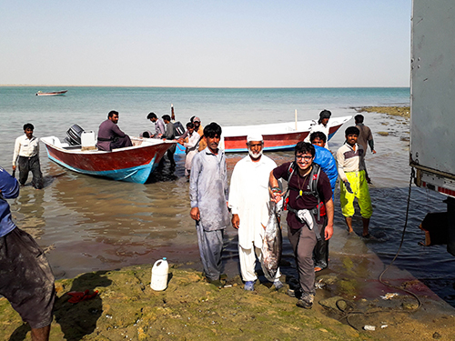
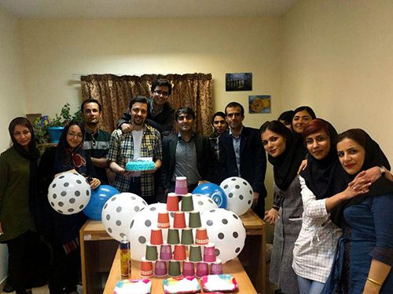
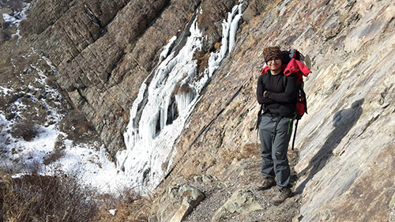
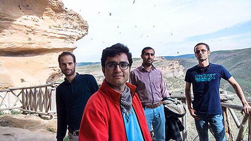
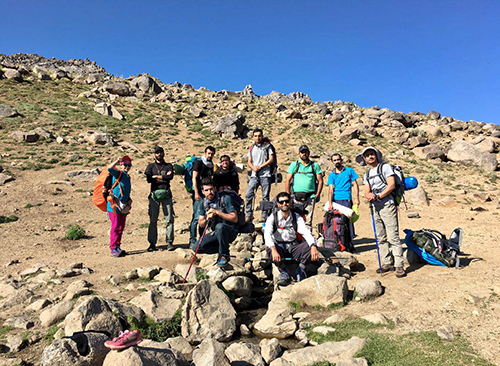
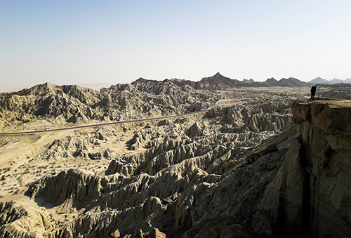
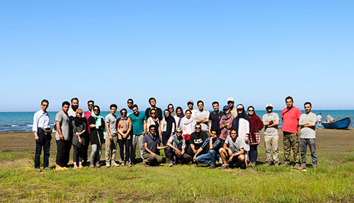
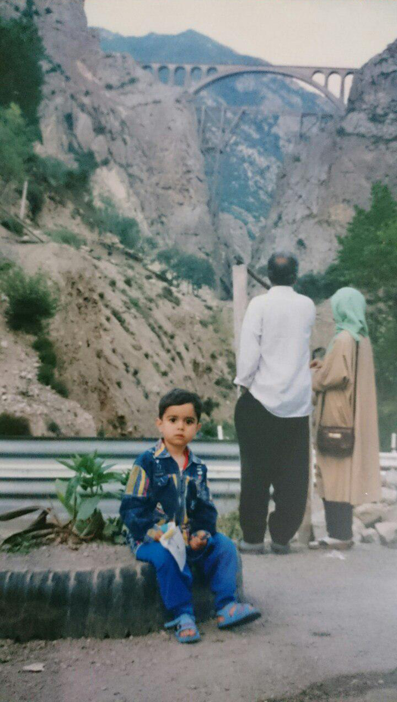

I received my BEng degree in information technology engineering form IASBS in 2016. Currently, I am a graduate student of computer science at the same institute and studies the behaviour of Human-Centred Artificial Intelligence Systems in vision and natural language aspects, where I was advised by Dr Ebrahim Ansari and Dr Parvin Razzaghi. I also participated in the European Union project consists of Vienna University of Technology, University of Bonn, Aristotle University of Thessaloniki and two European SMEs focused on Data Science. I have skill in Machine Learning, Deep Learning, Computer Vision, Natural Language Processing, High-performance computing and Embedded programming. In my free time I am mountaineering, backpacking, hiking and blogging.
Institute for Advanced Studies in Basic Sciences (IASBS), Zanjan, Iran
Research on Deep Learning, Computer Vision and Natural Language Processing.
Supervisors: Dr Ebrahim Ansari and Dr Parvin Razzaghi
GPA: 3.73/4.00 (Ranked 1st) via 34 passed credit hours
School of Informatics, Faculty of Sciences, Aristotle University of Thessaloniki (AUTH), Thessaloniki, Greece
Institute for Advanced Studies in Basic Sciences (IASBS), Zanjan, Iran
Thesis title: "A Survey on patch-based synthesis: GPU Implementation and Optimization"
DOI: 10.13140/RG.2.2.29490.86729/1, Supervisor: Dr Ebrahim Ansari
GPA: 3.36/4.00 (Ranked 5th) via 210 passed credit hours
I am a member of the Human-Centered Semi-Autonomous Vehicle project (known as FARAZ), which is an academic and industry collaboration that aims to create a semi-autonomous car by integrating some state-of-the-art approaches in computer vision and machine learning for assisting the drivers during critical and risky moments in which driver would be unable to steer the vehicle safely.
Our collaborators include Institute for Advanced Studies in Basic Sciences (IASBS), Charles University in Prague, Institute for Research in Fundamental Sciences (IPM), and Mehad Sanat Incorporation.
Learn MoreHadi Abdi Khojasteh, Ebrahim Ansari, Parvin Razzaghi, Akbar Karimi,
Hadi Abdi Khojasteh, Alireza Abbas Alipour, Ebrahim Ansari, Parvin Razzaghi,
Preparing for Lecture Notes on Data Engineering and Communications Technologies Springer book
Mehad Sanat Inc.
- Analysis, design and development of software systems
- Analysis, design and development of data transmission over dedicated networks
- Software programming for proprietary hardware
- Big data analytics and visualizations
- Embedded programming
- Design and development of custom web servers and services
Department of Computer Science of Institute for Advanced Studies in Basic Sciences (IASBS)
I have been involved in following courses:
Selected Research Areas: Computer vision, natural language processing, pattern recognition, machine learning (deep learning methods), artificial neural networks, image and signal processing (for object recognition/detection, segmentation, scene and video analysis), algorithms, data structures, programming languages, parallel and distributed computing (for GPU and CPU clusters/grid), big data analytics, data science, also familiar with probability and statistics, linear algebra, discrete mathematics, statistical data analysis, neuroscience and practical electronics.
Mount Sabalan (4,811 m)
Tuna Fish
AI Group
Mount Tochal (3,964 m)
Cavers
Research Week
Mount Alvand (3,580 m)
Martian Mountains
Camping
Conference Presentation

Mount Damavand (5,671 m)
Veresk Bridge